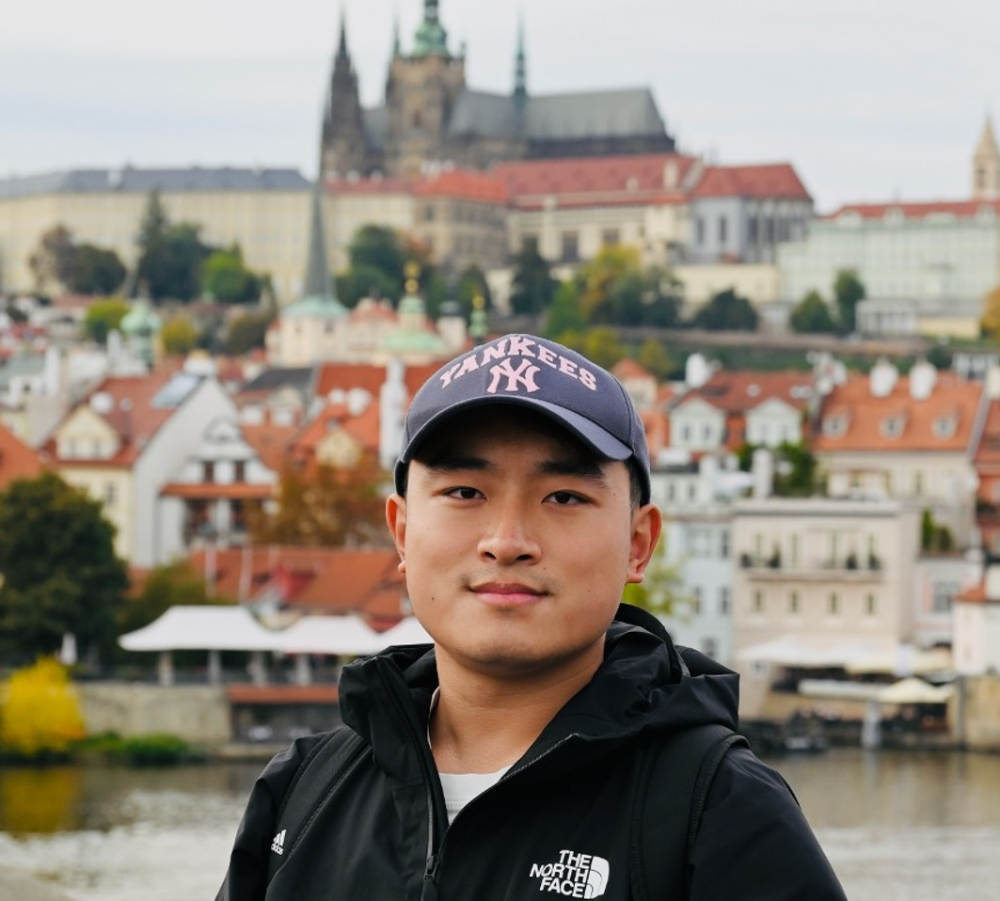

Hi there! I am Ruirui Zhong, a Ph.D. student at State Key Laboratory of Fluid Power and Mechatronic Systems, Zhejiang University in Hangzhou, China, where I am supervised by Prof. Yixiong Feng.
From November 2024, I have been conducting a visiting Ph.D. study at the Department of Production Engineering, KTH Royal Institute of Technology, under the supervision of Prof. Xi Vincent Wang and Prof. Lihui Wang.
My research interests focus on Robotics, Embodied AI, Diffusion Models, Foundation Models.
Email / Google Scholar / ORCID / Github